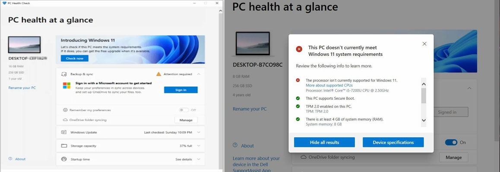
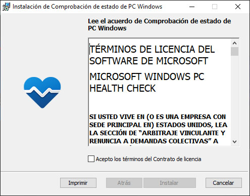
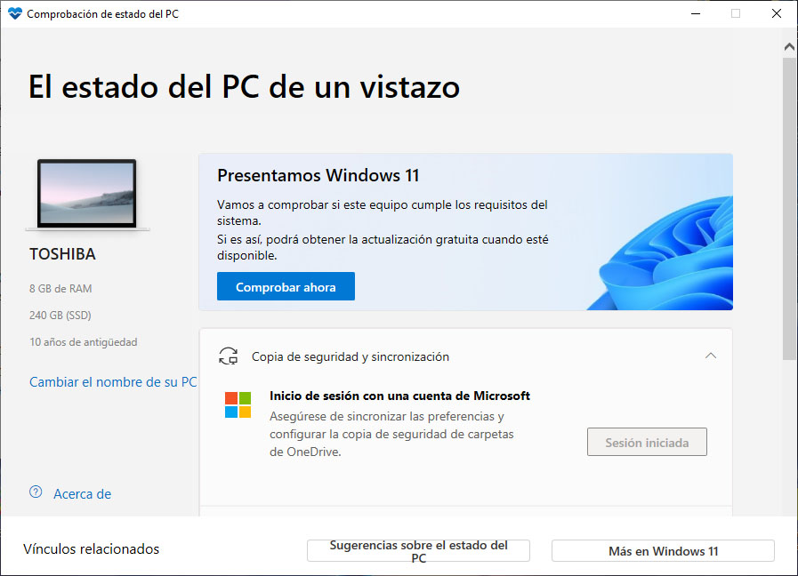

PC Health Check
La aplicación PC Health Check le brinda información actualizada sobre el estado de su dispositivo Windows
Para esta Guia
Descargar Todos los Archivos
| Archivos | Servidores | ||
|---|---|---|---|
| PC Health Check | Mega | WEB Oficial | |
Empezando este Tutorial
- Debemos descargar el archivo WindowsPCHealthCheckSetup de la última versión disponibles
- Una vez descargado lo podemos ejecutarlo como administrador para mejor ejecución 
- Una vez instalado lo ejecutamos para poder explorar nuestro equipo 
- Podemos verificar algunos de las siguientes funciones
- Verifique la elegibilidad de Windows 11
- Verifique la elegibilidad de Windows 11
- Copia de seguridad y sincronización
- Inicie sesión con su cuenta de Microsoft o cree una nueva para sincronizar sus preferencias en sus dispositivos, como contraseñas, configuraciones del navegador Microsoft Edge como favoritos y listas de lectura, temas y más
- Actualización de Windows
- Las actualizaciones periódicas de Windows ayudan a que su dispositivo funcione sin problemas y de forma segura. Si su dispositivo no está actualizado o necesita atención, PC Health Check se lo informará
- Capacidad de la batería
- Utilice esta sección de PC Health Check para obtener información sobre el rendimiento de sus baterías en comparación con su capacidad original para dispositivos con una o dos baterías
- Capacidad de almacenamiento
- Vea cuánto espacio de almacenamiento se utiliza para la unidad principal de su dispositivo, que contiene sus archivos, aplicaciones y Windows. Verás el porcentaje de que tu disco está lleno
- Tiempo de inicio
- Obtenga información sobre el tiempo de inicio de su dispositivo, junto con más información sobre lo que afecta estos tiempos
- Consejos sobre la salud de la PC
- Seleccione Consejos sobre el estado de su PC para conocer más formas de mejorar el rendimiento de su dispositivo
- Vea las especificaciones de su dispositivo
- Puede encontrar más información sobre su dispositivo debajo de su imagen, incluida la antigüedad de su dispositivo y la cantidad de almacenamiento
×